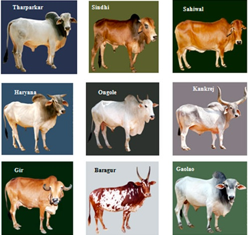

5.3 Uma Taxonomia de MOOCs


Imagem: © Dairy Cattle, India, 2014

Nesta seção, os principais designs de MOOC serão analisados. No entanto, os MOOCs são ainda um fenômeno relativamente novo e os modelos de design continuam a evoluir.
5.3.1 xMOOCs
Os MOOCs desenvolvidos inicialmente por professores da Universidade de Stanford e, pouco depois, por professores do MIT e de Harvard, baseiam-se principalmente em um modelo de transmissão de informações marcadamente behaviorista, onde o ensino central se dá através de vídeos gravados on-line de aulas curtas, combinados com testes automatizados por computador e, por vezes, através da utilização de avaliações por pares. Estes MOOCs são oferecidos através de plataformas de software baseadas na nuvem, tais como Coursera, edX e FutureLearn.
xMOOCs é um termo cunhado por Stephen Downes (2012) para os cursos desenvolvidos por Coursera, Udacity e edX. Atualmente (2019), os xMOOCs são, de longe, a modalidade de MOOC mais comum. Os professores têm uma flexibilidade considerável no design do curso, existindo assim grandes variações nos detalhes, mas, no geral, os xMOOCs apresentam as seguintes características comuns de design:
5.3.1.1 Plataformas de software especialmente planejadas
A maioria dos xMOOCs de grande escala utiliza plataformas de software concebidas especificamente, tais como Coursera, edX ou FutureLearn, que permitem o registro de um número muito elevado de participantes, disponibilizam instalações para o armazenamento e transmissão sob demanda de materiais digitais e automatizam os procedimentos de avaliação e o acompanhamento do desempenho dos estudantes. A plataforma de software também permite que as empresas que disponibilizam o software recolham e analisem os dados dos estudantes.
No entanto, cada vez mais instituições de menor porte oferecem os seus próprios xMOOCs, adaptando ou utilizando os seus processos de matrícula on-line de extensão, os seus próprios servidores de vídeo e ferramentas automatizadas de feedback, testes e correção prontas para uso.
5.3.1.2 Videoaulas
Os xMOOCs utilizam a modalidade clássica de aula expositiva, disponibilizada on-line por meio de videoaulas gravadas para download sob demanda. Estas videoaulas ficam normalmente disponíveis semanalmente durante um período de 10 a 13 semanas. Inicialmente eram frequentemente aulas de 50 minutos, mas, com base na experiência, alguns xMOOCs utilizam agora gravações mais curtas (por vezes com duração reduzida a 15 minutos), aumentando o número de trechos de vídeo. Da mesma forma, as disciplinas de xMOOCs estão se tornando mais curtas, com algumas durando apenas cinco semanas. Têm sido utilizados vários métodos de produção de vídeo, incluindo a captura de aulas (gravação de aulas presenciais no campus, armazenadas e transmitidas sob demanda), produção de estúdio completa ou gravação em computador pelo próprio professor.
5.3.1.3 Avaliações corrigidas por computador
Os estudantes realizam um teste on-line e recebem feedback computadorizado imediato. Estes testes são normalmente oferecidos ao longo do curso e podem ser utilizados apenas para feedback dos participantes. Alternativamente, os testes podem ser utilizados para determinar a atribuição de um certificado, ou pode haver uma nota ou certificado final baseado unicamente em um teste on-line de conclusão de curso. A maioria das tarefas de xMOOCs baseia-se em questões de múltipla escolha corrigidas por computador, mas alguns MOOCs também utilizam caixas de texto ou de fórmulas para os participantes inserirem respostas, tais como códigos em uma disciplina de ciência da computação ou fórmulas matemáticas, e, em alguns casos, respostas de texto curtas, mas na maioria dos casos a correção será feita por computador.
5.3.1.4 Avaliação por pares
Alguns xMOOCs experimentaram distribuir os estudantes aleatoriamente em pequenos grupos para avaliação por pares, especialmente para questões de avaliação mais abertas ou dissertativas. No entanto, isto revelou-se frequentemente problemático devido às grandes variações de conhecimento entre os diferentes membros de um grupo e aos diferentes níveis de envolvimento dos participantes no curso.
5.3.1.5 Materiais de apoio
Por vezes, podem ser incluídas cópias de slides, arquivos de áudio suplementares, links para outros recursos e artigos on-line para download pelos participantes.
5.3.1.6 Espaço compartilhado de comentários/discussão
Locais onde os participantes podem postar perguntas, pedir ajuda ou comentar sobre o conteúdo do curso.
5.3.1.7 Sem moderação de discussão, ou com moderação muito leve
O grau de moderação das discussões ou comentários varia provavelmente mais do que qualquer outra característica nos xMOOCs, mas, no máximo, a moderação é dirigida a todos os participantes e não a indivíduos. Devido ao elevado número de participantes e de comentários, raramente é possível a moderação de comentários individuais pelo(s) professor(es) responsável(eis) pelo MOOC. Alguns professores não oferecem qualquer tipo de moderação, pelo que os participantes dependem de outros colegas para responder a perguntas ou comentários. Alguns professores fazem uma amostragem de comentários e perguntas e postam respostas gerais. Outros recorrem a voluntários ou assistentes de ensino remunerados para analisar os comentários a fim de identificar áreas comuns de interesse partilhadas por vários participantes, respondendo em seguida. Contudo, na maioria dos casos, os participantes moderam os comentários ou perguntas uns dos outros.
5.3.1.8 Selos (badges) ou certificados
A maioria dos xMOOCs confere algum tipo de reconhecimento pela conclusão bem-sucedida de um curso, com base em uma avaliação final corrigida por computador. No entanto, até o momento, os selos ou certificados de MOOCs não foram aceitos, na maioria dos casos, para efeitos de créditos ou admissão, mesmo pelas instituições que oferecem o MOOC — ainda que as aulas sejam as mesmas que as dos estudantes presenciais. Existem poucas evidências até o momento sobre a aceitação de qualificações de MOOCs por parte dos empregadores (ver, por exemplo, Banks e Meinert, 2016 ou Gatuguta-Gitau, 2017). No entanto, com o desenvolvimento crescente de parcerias entre grandes empregadores e provedores de MOOCs para o desenvolvimento de microcredenciais, isto poderá mudar (ver, por exemplo, Gordon, 2018).
5.3.1.9 Análise de aprendizagem (learning analytics)
Embora até o momento não tenha havido muita informação publicada sobre a utilização de análise de aprendizagem nos xMOOCs, as plataformas de xMOOCs têm capacidade para recolher e analisar grandes volumes de dados (big data) sobre os participantes e o seu desempenho, permitindo, pelo menos em teoria, um feedback imediato aos professores sobre as áreas em que o conteúdo ou o design necessitam de ser melhorados e, possivelmente, direcionando avisos ou pistas automatizadas para indivíduos. Para exemplos da utilização da análise de aprendizagem em MOOCs, consulte Laveti et al., 2017 ou Eradze e Tammets, 2017.
5.3.1.10 Resumo dos xMOOCs
Os xMOOCs utilizam, portanto, prioritariamente um modelo de ensino centrado na transmissão de informações, com entrega de conteúdos de alta qualidade, avaliação corrigida por computador (principalmente para fins de feedback dos estudantes) e automação de todas as transações fundamentais entre os participantes e a plataforma de aprendizagem. Raramente existe qualquer interação direta entre um participante individual e o professor responsável pelo curso, embora os professores possam postar comentários gerais em resposta a uma gama de comentários dos participantes. Assim, existe uma epistemologia altamente behaviorista/objetivista subjacente aos xMOOCs.
5.3.2 cMOOCs
Os cMOOCs, o primeiro dos quais foi desenvolvido por três professores para uma disciplina da Universidade de Manitoba em 2008, baseiam-se na aprendizagem em rede, em que a aprendizagem se desenvolve através das conexões e discussões entre os participantes por meio de mídias sociais. Não existe uma plataforma tecnológica padrão para os cMOOCs, que utilizam uma combinação de webcasts, blogs de participantes, tweets, softwares que ligam blogs e tweets sobre o mesmo assunto através de hashtags e fóruns de discussão on-line. Embora existam normalmente alguns especialistas que iniciam e participam nos cMOOCs, estes são em grande parte conduzidos pelos interesses e contribuições dos participantes. Normalmente, não há qualquer tentativa de avaliação formal.
5.3.2.1 Princípios fundamentais de design dos cMOOCs
Downes (2014) identificou quatro princípios fundamentais de design para cMOOCs:
- autonomia do aprendiz: embora quem organize o MOOC escolha normalmente o tema principal e convide os participantes, não existe um currículo formal; os participantes decidem o que discutir, o que ler e o que desejam contribuir para o tema;
- diversidade: nas ferramentas utilizadas, na gama de participantes, nos seus níveis de conhecimento e na variedade de conteúdos;
- interatividade: em termos de aprendizagem cooperativa, comunicação entre participantes, resultando em conhecimentos emergentes;
- abertura: em termos de acesso, conteúdos, atividades e avaliação.
Assim, para os defensores dos cMOOCs, a aprendizagem resulta não da transmissão de informações de um especialista para novatos, como nos xMOOCs, mas sim da partilha e do fluxo de conhecimentos entre os participantes.
5.3.2.2 Dos princípios à prática
Identificar a forma como estas características fundamentais de design dos cMOOCs são traduzidas na prática é um pouco mais difícil de precisar, uma vez que os cMOOCs dependem de um conjunto de práticas em evolução. De fato, a maioria dos cMOOCs até à data recorreu a “especialistas”, quer na organização e promoção do MOOC, quer no fornecimento de “nós” de conteúdo em torno dos quais a discussão tende a girar. Em outras palavras, as práticas de design dos cMOOCs ainda são mais um trabalho em andamento do que as dos xMOOCs.
No entanto, atualmente, as seguintes são práticas fundamentais de design em cMOOCs:
- utilização de mídias sociais: em parte porque a maioria dos cMOOCs não tem base ou apoio institucional, não utilizam atualmente uma plataforma ou plataformas compartilhadas, mas são apoiados de forma mais difusa por uma gama de ferramentas e mídias “conectadas” de acesso aberto. Estas podem incluir um sistema simples de inscrição on-line e a utilização de ferramentas de webconferência, tais como Blackboard Collaborate ou Adobe Connect, transmissão de arquivos de vídeo ou áudio, blogs, wikis, sistemas de gestão de aprendizagem abertos como Moodle ou Canvas, Twitter, LinkedIn ou Facebook, permitindo a todos os participantes compartilharem as suas contribuições. De fato, à medida que se desenvolvem novos aplicativos e ferramentas de mídias sociais, estes também tendem a ser incorporados nos cMOOCs. Todas estas ferramentas estão ligadas através de hashtags baseadas na web ou outros mecanismos de ligação, permitindo aos participantes identificar as contribuições de mídias sociais de outros participantes. Assim, a utilização de mídias sociais frouxamente interligadas é um componente de design fundamental dos cMOOCs;
- conteúdo gerado pelos participantes: em princípio, com exceção de um tema comum que pode ser decidido por quem queira organizar um cMOOC, o conteúdo é decidido e fornecido pelos próprios participantes. De fato, pode não existir um professor formalmente identificado. Na prática, contudo, os organizadores do cMOOC (que têm, eles próprios, alguma experiência no tema do MOOC) tendem a convidar potenciais participantes que tenham experiência ou que já tenham uma abordagem bem articulada sobre o tema para fazerem contribuições que sirvam de base para discussão e debate. Os participantes escolhem as suas próprias formas de contribuir ou comunicar, sendo as mais comuns os posts em blogs, tweets ou comentários em blogs de outros participantes, embora alguns cMOOCs utilizem wikis ou fóruns de discussão de código aberto. A prática de design fundamental no que diz respeito ao conteúdo é que todos os participantes contribuem e compartilham conteúdos;
- comunicação distribuída: esta é provavelmente a prática de design mais difícil de compreender para quem não está familiarizado com os cMOOCs — e mesmo para quem já participou. Com participantes na casa das centenas ou mesmo dos milhares, cada um contribuindo individualmente através de uma variedade de mídias sociais, existe uma infinidade de interligações diferentes entre os participantes que são impossíveis de acompanhar (na totalidade) por qualquer participante individualmente. Isto resulta em muitas subconversas, mais comumente a um nível binário de duas pessoas que comunicam entre si, do que em uma discussão de grupo integrada, embora todas as conversas sejam “abertas” e todos os outros participantes possam contribuir para uma conversa se souberem que ela existe. A prática de design fundamental no que diz respeito à comunicação é, portanto, uma rede auto-organizável com muitos subcomponentes;
- avaliação: não há avaliação formal, embora os participantes possam solicitar feedback a outros participantes com mais conhecimentos, de forma informal. Basicamente, os participantes decidem por si próprios se o que aprenderam é adequado para eles.
5.3.2.3 Resumo dos cMOOCs
Os cMOOCs utilizam, portanto, prioritariamente uma abordagem em rede da aprendizagem baseada em aprendizes autônomos que se ligam entre si através de mídias sociais abertas e conectadas e compartilham conhecimentos através de contribuições pessoais. Não existe um currículo predefinido nem uma relação formal professor-estudante, quer para a transmissão de conteúdos, quer para o suporte ao aprendiz. Os participantes aprendem com as contribuições dos outros, com os conhecimentos macro gerados através da comunidade e com a autorreflexão sobre as suas próprias contribuições, refletindo assim muitas das características das comunidades de interesse ou de prática.
Os cMOOCs têm uma filosofia educativa muito diferente da dos xMOOCs. Downes e Siemens argumentaram que os cMOOCs refletem uma nova teoria de aprendizagem, o “conectivismo”, baseada na exploração de redes sociais on-line (consulte o Capítulo 2.6). Os cMOOCs refletem certamente uma epistemologia construtivista.
5.3.3 Outras variações de MOOCs
Foquei deliberadamente nas diferenças de design entre xMOOCs e cMOOCs, e Mackness (2013) e Yousef et al. (2014) também enfatizam diferenças semelhantes na filosofia/teoria entre cMOOCs e xMOOCs, bem como o próprio Downes (2012), um dos criadores originais dos cMOOCs.
No entanto, cumpre notar que o design dos MOOCs continua a evoluir, com todo o tipo de variações. Pilli e Admiraal (2016) identificaram 27 tipos de MOOCs, incluindo:
- cMOOCs;
- xMOOCs;
- BOOCs (big open online course - grande curso on-line aberto): uma mistura de xMOOC e cMOOC;
- COOCs (community open online courses - cursos on-line abertos da comunidade): cursos de pequena escala, sem fins lucrativos, que as empresas abrem on-line para oferecer formação a clientes e/ou funcionários;
- DOCCs (distributed open collaborative course - curso colaborativo aberto distribuído): envolve 17 universidades compartilhando e adaptando o mesmo MOOC básico;
- LOOCs (little open online course - pequeno curso on-line aberto): além de 15 a 20 estudantes presenciais pagantes, estes cursos também permitem que um número limitado de estudantes não registrados realize a disciplina, mas também pagando uma taxa;
- MOORs (massive open online research - pesquisa on-line aberta e massiva): uma mistura de palestras em vídeo e projetos de pesquisa dos estudantes orientados pelos professores;
- SPOCs (small, private, online courses - cursos on-line pequenos e privados): o exemplo apresentado provém da Harvard Law School, que pré-selecionou 500 estudantes de entre mais de 4.000 candidatos, os quais assistem às mesmas aulas em vídeo que os estudantes presenciais matriculados em Harvard;
Os MOOCs desenvolvidos pela Universidade da Colúmbia Britânica e por várias outras instituições recorrem a voluntários, assistentes acadêmicos remunerados ou mesmo ao próprio professor para moderar as discussões on-line e os comentários dos participantes, aproximando o design desses MOOCs das disciplinas on-line regulares de graduação — exceto pelo fato de estarem abertos a qualquer pessoa.
5.3.4 O que está acontecendo aqui?
Não é de surpreender que, com o tempo, o design dos MOOCs esteja evoluindo. Parecem existir três tipos distintos de desenvolvimentos:
- alguns dos MOOCs mais recentes, especialmente os de instituições com um histórico de aprendizagem on-line valendo créditos anterior à introdução dos MOOCs, estão começando a aplicar aos MOOCs algumas das melhores práticas, tais como grupos de discussão organizados e moderados, característicos dos cursos regulares on-line (ver o Capítulo 4, Seção 4);
- outros tentam abrir também as suas disciplinas presenciais regulares, simultaneamente, a estudantes não registrados (que é, aliás, a forma como surgiu o primeiro MOOC, de Cormier, Downes e Siemens);
- outros, ainda, tentam mesclar materiais ou conteúdos de MOOCs on-line com o seu ensino presencial.
É provável que a inovação no design de MOOCs e a forma como são utilizados continuem. Em particular, diferentes tipos de MOOC surgem e desaparecem. Tem sido difícil encontrar exemplos ativos de alguns dos tipos de MOOC listados na Seção 5.3.3 ao revisar este capítulo.
No entanto, alguns destes desenvolvimentos indicam também uma grande confusão em torno da definição e dos objetivos dos MOOCs, especialmente no que diz respeito à massividade e à abertura. Se os participantes de fora de uma universidade têm de pagar uma taxa elevada para participar em um curso presencial que, de outra forma, seria “fechado”, ou se os participantes externos têm de ser selecionados com base em determinados critérios antes de poderem participar, trata-se realmente de algo aberto? Estará o termo MOOC sendo utilizado agora para descrever qualquer oferta on-line não convencional ou qualquer curso de educação continuada on-line? É difícil ver de que forma um SPOC, por exemplo, difere de uma disciplina típica de educação continuada on-line, exceto, talvez, pelo fato de utilizar uma palestra gravada e não um sistema de gestão de aprendizagem. Corre-se o risco de qualquer curso on-line acabar por ser descrito como um MOOC, quando na realidade existem grandes diferenças de design e de filosofia.
Embora cada uma destas inovações individuais, frequentemente resultantes da iniciativa de um professor individual, deva ser acolhida em princípio, as consequências precisam de ser cuidadosamente consideradas em prol da justiça para com os potenciais participantes. Os professores que planejam MOOCs precisam certificar-se de que o design é coerente em termos de filosofia educativa e ter clareza sobre os motivos pelos quais optam por um MOOC em vez de um curso on-line convencional. Isto é particularmente importante se existir qualquer forma de avaliação formal. O status de tal avaliação para os participantes que não são formalmente admitidos ou registrados como estudantes em uma instituição precisa ser claro e consistente.
Existe ainda maior confusão sobre a mistura de MOOCs com o ensino presencial. Atualmente, a estratégia parece consistir em desenvolver primeiro um MOOC e depois ver como este pode ser adaptado ao ensino presencial. Contudo, uma estratégia melhor poderia ser desenvolver uma disciplina convencional on-line valendo créditos, em termos de design, e depois ver como esta poderia ser dimensionada para acesso aberto a outros participantes. Outra estratégia poderia consistir na utilização de mídias sociais abertas, tais como uma wiki de disciplina e blogs de estudantes, para alargar o acesso ao ensino de uma disciplina formal, em vez de desenvolver um MOOC completo.
A reflexão sobre as implicações políticas da incorporação de MOOCs ou de materiais de MOOCs no ensino presencial não parece estar ocorrendo no momento na maioria das instituições que experimentam os MOOCs em regime híbrido (blended). Se os participantes de MOOCs realizam exatamente a mesma disciplina e avaliação que os estudantes matriculados presencialmente e valendo créditos, a instituição concederá aos participantes externos de MOOCs que concluam com sucesso a avaliação os créditos correspondentes e/ou os admitirá na instituição? Se não, por que não? Para uma excelente discussão destas questões estruturada para um Conselho Universitário, ver Green (2013).
Assim, alguns destes desenvolvimentos de MOOCs parecem funcionar em um vácuo de políticas relativas à aprendizagem aberta em geral. Em algum momento, as instituições precisarão desenvolver uma estratégia mais clara e consistente para a aprendizagem aberta, em termos de como esta pode ser melhor disponibilizada, de como se alinha com a aprendizagem formal e de como a aprendizagem aberta pode ser acomodada dentro das restrições fiscais da instituição e, a partir daí, onde os MOOCs, outros REAs e os cursos on-line convencionais valendo créditos se enquadrariam na estratégia. Para saber mais sobre este tema, consulte o Capítulo 11.
Referências
Banks, C. and Meinert, E. (2016) The acceptability of MOOC certificates in the workplace International Conference eLearning 2016
Downes, S. (2012) Massively Open Online Courses are here to stay, Stephen’s Web, 20 de julho
Downes, S. (2014) The MOOC of One, Valencia, Spain, March 10
Eradze M., Tammets K. (2017) Learning Analytics in MOOCs: EMMA Case. In: Lauro N., Amaturo E., Grassia M., Aragona B., Marino M. (eds) Data Science and Social Research: Studies in Classification, Data Analysis, and Knowledge Organization Springer: Cham
Gatuguta-Gitau, S. (2017) MOOCs: Employers View, a brief snapshot QS, London, UK
Gordon, A. (2018) ‘Micromasters surge as MOOCs go from education to qualification‘, Forbes, 13 de fevereiro
Green, C. (2013) Mission, money and MOOCs Association of Governing Boards Trusteeship, No. 1, Volume 21
Laveti, R. et al. (2017) Implementation of learning analytics framework for MOOCs using state-of-the-art in-memory computing, IEEE Xplore, 19 de outubro
Mackness, J. (2013) cMOOCs and xMOOCs – key differences, Jenny Mackness, 22 de outubro
Pilli, O. amd Admiraal, W. (2016) A Taxonomy of Massive Open Online Courses Contemporary Educational Technology, Vol. 7, No. 3, pp. 223-240
Yousef, A. et al. (2014) MOOCs: A Review of the State-of-the-Art Proceedings of 6th International Conference on Computer Supported Education – CSEDU 2014, Barcelona, Spain, pp. 9-20
Atividade 5.3: Pensando sobre o design de MOOCs
1. Quando um MOOC é um MOOC e quando não o é? Você consegue identificar as características comuns? O termo MOOC continua a ser útil?
2. Se você fosse planejar um MOOC, quem seria o público-alvo? Que tipo de MOOC seria? Que forma de avaliação poderia utilizar? O que faria você pensar que o seu MOOC foi um sucesso, após a sua realização? Quais critérios utilizaria?
3. Consegue pensar em outras formas de tornar uma ou mais de suas disciplinas mais abertas, além de criar um MOOC do zero? Quais seriam as vantagens e desvantagens destes outros métodos, em comparação com um MOOC?
Para minhas considerações sobre estas questões, clique no podcast abaixo:
Um elemento de áudio foi excluído desta versão do texto. Você pode ouvi-lo on-line aqui: https://pressbooks.bccampus.ca/teachinginadigitalagev2/?p=154